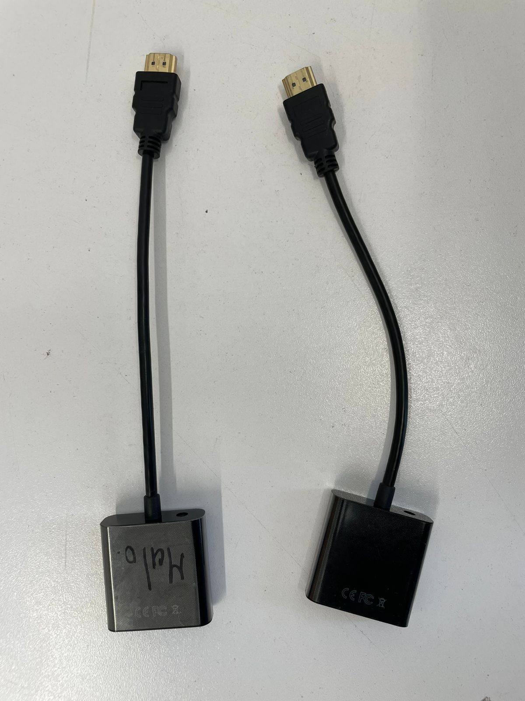
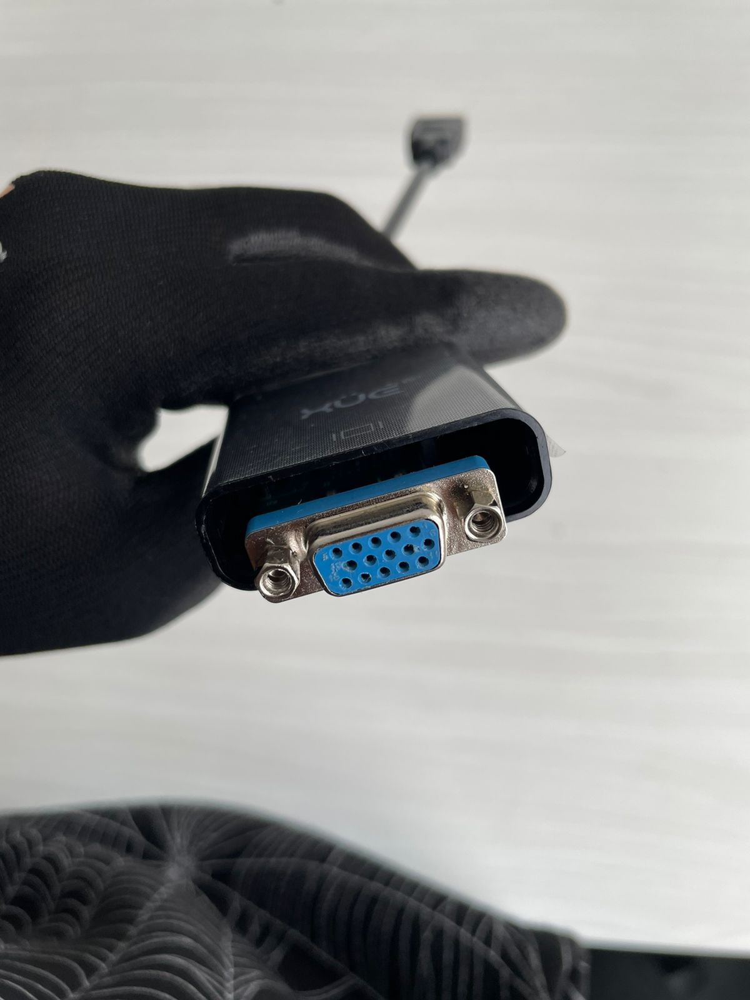
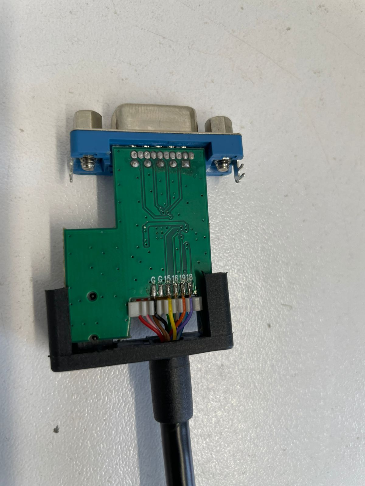
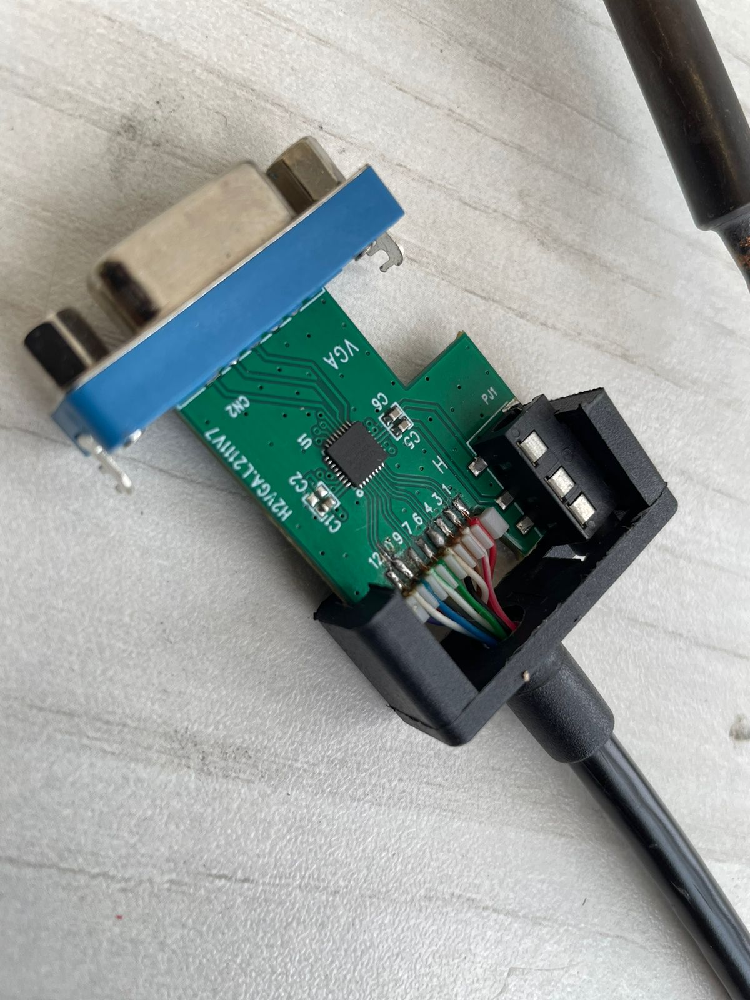
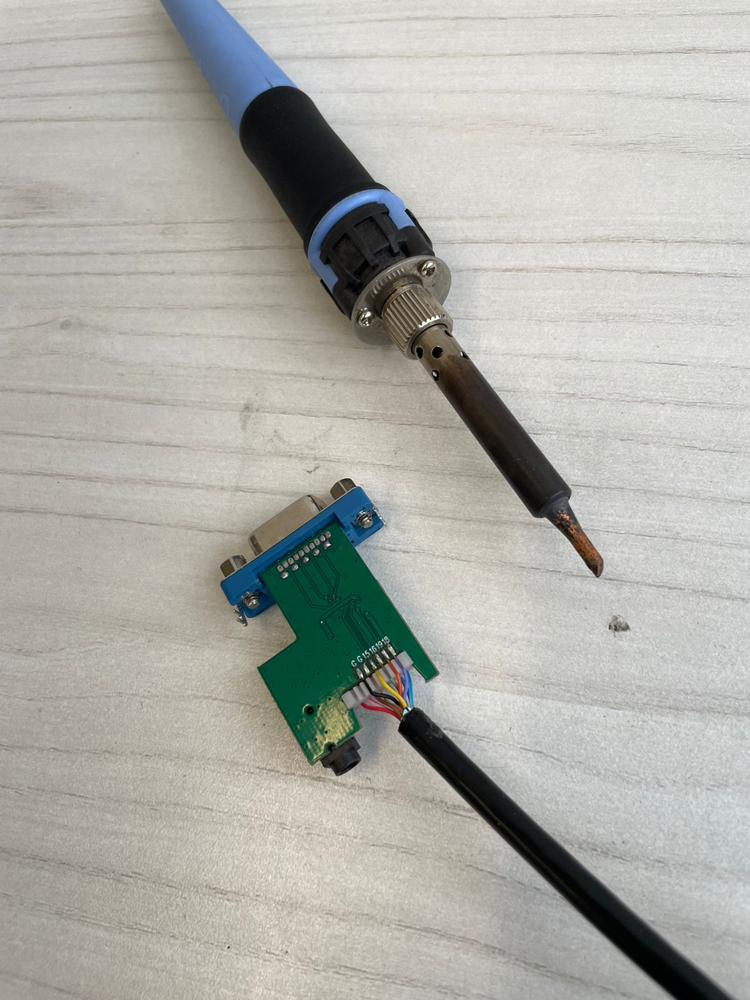
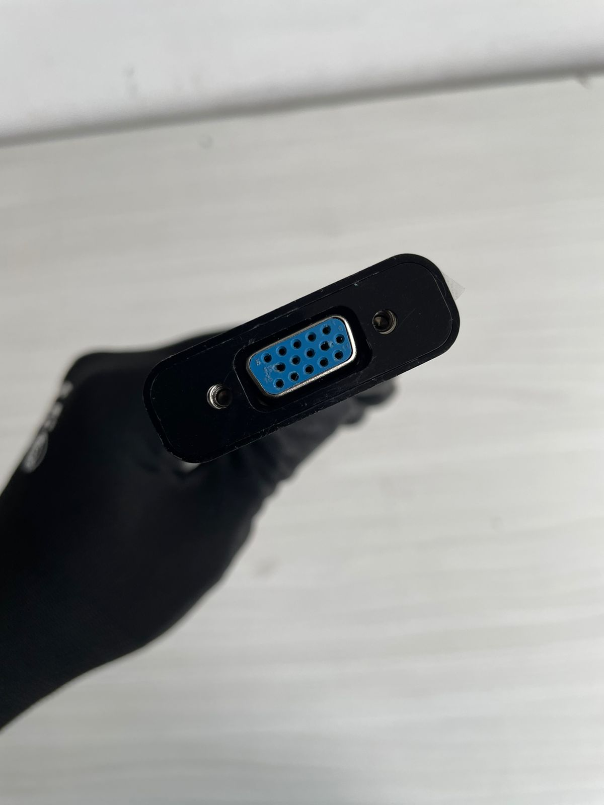
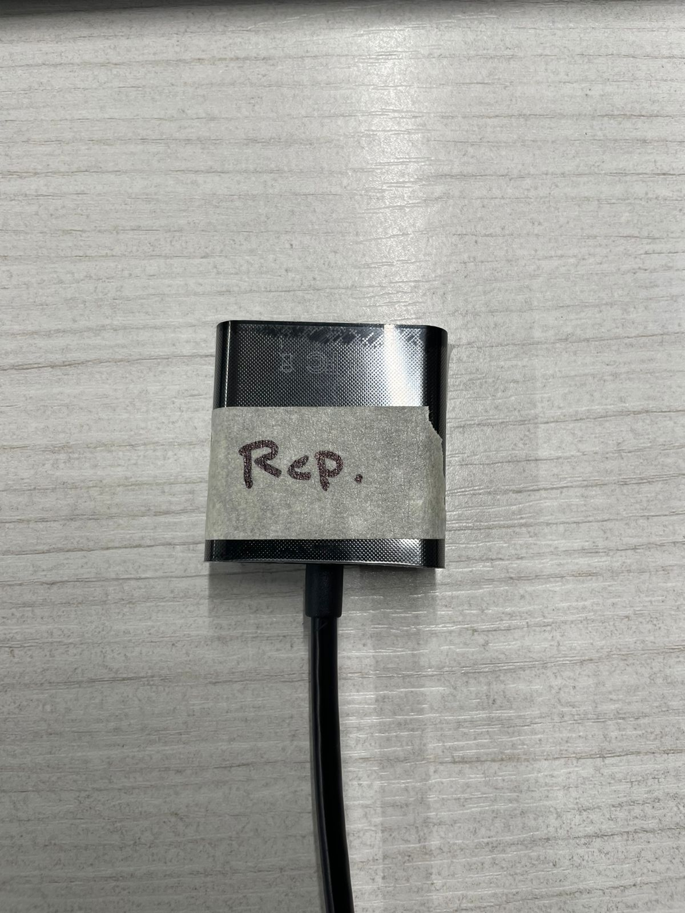

¿En qué consistió el proyecto?
-
1 - Identificación de la falla:
 -
2 - Se destapan los convertidores para su observación .
 -
3 - Se detecta que el punto de contacto está fuera de lugar.
 -
4 - Se procede a soldar el contacto para restaurar la conexión..
 -
5 - Se vuelve a ensamblar el convertidor.
 -
6 - Se realiza una prueba de transmisión de video.
 -
6 - Se marca el convertidor como reparado.
